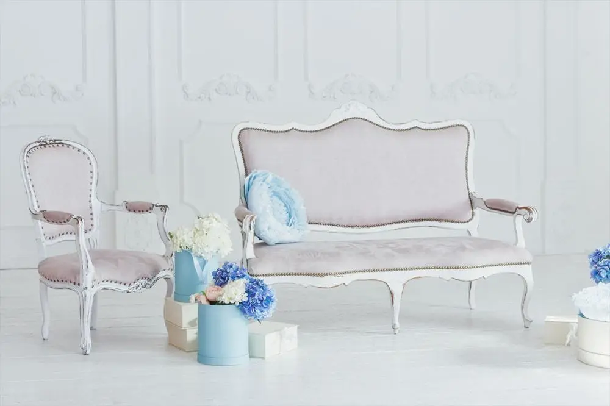

Nos Canapées


Canapés Camelback
C'est un design du XVIIIe siècle qui ne s’est jamais démodé. Il se caractérise par un dossier considérablement arqué, des pieds en bois exposés et du bois fréquemment exposé sur le dessus du dossier et des bras. Ces types de sofas conviennent bien aux designs ornés et classiques.
800dt